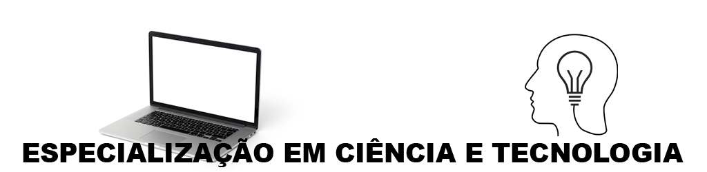

Apresentação do Curso
Voltado ao professor da rede pública de ensino. Seu projeto pedagógico leva em consideração a filosofia de trabalho inter, multi e transdisciplinar, não considerando a divisão do conhecimento em saberes disciplinares.
Objetivo
Seu objetivo principal é desenvolver habilidades e competências típicas da nova estruturação da ciência no século XXI.
Nível:
Especialização
Modalidade:
Distância
Duração média do curso:
2 anos